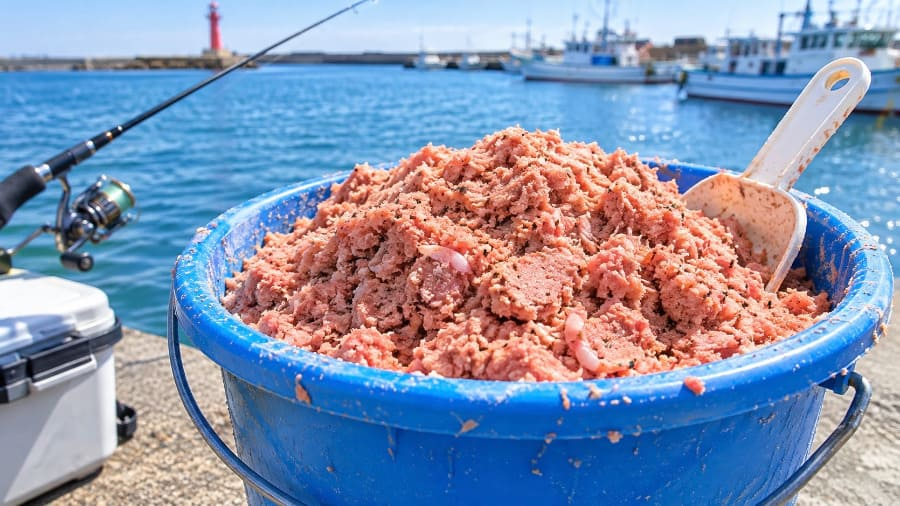
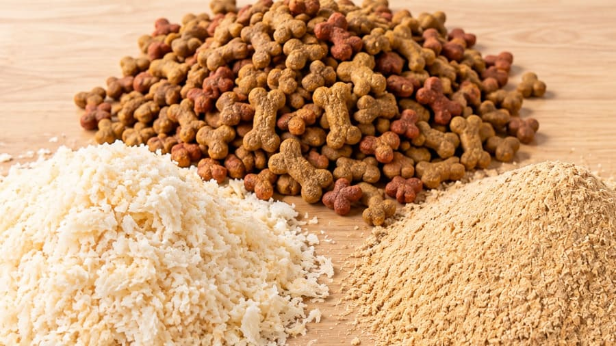

ダイソー・ホームセンター・業務スーパーで作るアジパワー！？市販集魚剤の成分を分析して激安代用品を探してみた

サビキ釣りやカゴ釣りでコマセを撒くたび、1袋500円前後の集魚剤があっという間に消えていく——。毎回釣具店で買い足していると、エサ代だけでも意外と出費がかさむものです。そこで今回は、市販の集魚剤に使われている原材料を成分レベルで分解し、ダイソーやホームセンター、業務スーパーで手に入る安価な素材で代用するレシピを徹底検証しました。目指すのは市販品の完全コピーではなく、「原材料の役割」を身近な素材で補い、低コストで実戦投入できる自作集魚剤です。
1. まずは市販集魚剤（アジパワー・サビキパワー）の原材料を分析
自作集魚剤を作る第一歩は、市販品に何が入っているかを知ることです。今回はサビキ釣りの定番であるマルキューの「アジパワー」と「サビキパワー」の原材料表示を参考に、それぞれの素材が果たす役割を分解しました。
アジパワーの主な原材料
- ベース・拡散調整：糟糠類（米ぬか・ふすま等）、麩、パン粉
- 集魚・旨味成分：魚粉、酵母、アミノ酸、乳酸菌製剤
- 視覚アピール：キララ（光を反射する素材）
サビキパワーの主な原材料
- ベース・拡散調整：糟糠類、パン粉
- 集魚・発酵・旨味成分：酒粕、さなぎ粉、エビ粉、アミ・オキアミエキス、乳酸菌製剤、食塩
- 視覚アピール：キララ、着色料
こうして並べてみると、市販集魚剤は単なる「魚の好きな匂い粉」ではありません。①かさ増しと煙幕を作るベース素材、②魚を寄せる動物性タンパク質・アミノ酸・発酵成分、③海中でキラキラ光って視覚に訴える反射素材という3つの役割が組み合わさって機能しています。
2. 【ワンコイン入門】ダイソーだけで作るお試し自作集魚剤レシピ
いきなりホームセンターや通販で10kg単位の材料を買い込むのはハードルが高いものです。まずはダイソーで揃う4つの素材（合計440〜550円・釣行1〜2回分）だけで、自作集魚剤の使い心地や魚の反応を試してみましょう。

| 役割 | ダイソーで買う商品（各110円） | 売り場・代用の狙い |
|---|---|---|
| ベース・かさ増し | パン粉（150〜200g前後） | 食品コーナー。アミエビの水分を吸い、カゴからの出方を調整する |
| 魚粉・動物性タンパク質 | ペット用煮干し（無塩タイプ） | ペットコーナー。塩分無添加で魚の旨味と香りが強い |
| アミノ酸・旨味 | 味の素（小瓶）または粉末スポドリ | 食品コーナー。グルタミン酸ナトリウム等で摂食スイッチを入れる |
| キララ（光反射） | ネイル用グリッターラメ（シルバー等） | コスメコーナー。海中で光を乱反射し、小魚のウロコのようにアピール |
ダイソーお試しレシピの作り方と現場での混ぜ方
準備する道具も、ダイソーの「厚手チャック付き保存袋（フリーザーバッグ）」が1枚あれば完結します。自宅での下準備は3分で終わります。
- 手順① 煮干しを砕く：厚手のチャック袋にペット用煮干し（半袋〜1袋）を入れ、袋の上から麺棒やすりこぎ、空き瓶の底などで細かく砕きます。完全にパウダー状にならなくても、粗挽きと粉末が混ざった状態がむしろ煙幕と粒の演出に効きます。
- 手順② 乾物をすべて袋で混ぜる：砕いた煮干しが入った袋へ、パン粉1袋、味の素（小さじ2〜3杯）、ネイル用グリッターラメ（小さじ1〜2杯）を入れ、空気を含ませてよく振り混ぜます。
- 手順③ 釣り場でアミエビ・海水と合わせる：釣り場に着いたら、解凍したアミコマセブロックに自作ベース粉を混ぜ込みます。パサつく場合は海水を少しずつ足し、握ると軽くまとまり、水中でほろっと崩れる硬さに調整してください。
パン粉の比率が多すぎると粘りが出てカゴに詰まりやすくなります。ダイソー版はまず「アミコマセ7：自作粉3」くらいの割合から混ぜ始め、カゴには8分目までゆるく詰めるのが綺麗に煙幕を広げるコツです。
3. 原材料の役割別！身近な代用品の選び方
ダイソーのお試し版で感触を掴んだら、次はスーパーやホームセンターの素材も視野に入れて、役割ごとにコスパと性能を追求してみましょう。
糟糠類・ベース素材（米ぬか・パン粉）
米ぬかは精米所や通販、ホームセンターで圧倒的な安さで手に入り、水中での煙幕（濁り）を作るベースとして優秀です。ただし脂質を多く含むため、夏場や長期保管では酸化しやすい弱点があります。大量に買う場合は密閉容器で冷暗所に保管し、水分調整役として業務スーパーなどの大袋パン粉を組み合わせると扱いやすくなります。
魚粉・エビ粉・さなぎ粉の代用（ドッグフード・乾燥エビ）
大容量でコストを極限まで下げるなら、安価なドライドッグフードが強力な複合素材になります。原材料表示を見ると、穀物・魚粉・肉粉・油脂・ビタミン類がバランスよく配合されており、集魚剤のベース要素を1つで補えます。より動物性の匂いを強めたい場合は、乾燥エビの粉末やかつお節粉を足すのも有効です。
酵母・アミノ酸・発酵由来の素材
味の素（グルタミン酸ナトリウム）やアミノ酸ゼリー飲料、粉末スポーツ飲料は手軽にアミノ酸を補える素材です。また、サビキパワーに使われている酒粕の代用としては、酒粕そのもののほか、少量のビール（麦芽・発酵由来成分）やヤクルト・ピルクルなどの乳酸菌飲料を釣行時に液体として加える方法も試す価値があります。
キララ（光を反射する素材）
市販品の「キララ」の正確な組成は非公開ですが、「海中で光を反射して魚に気づかせる」という機能だけなら、ダイソーのネイル用ラメ・ホログラムや、手芸用ラメ、パール顔料、化粧品用マイカで十分に代用できます。
4. コスパ最強の運用術：「保存用ベース」＋「釣行ごとの後入れ味付け」
候補となる素材を最初から全部混ぜてしまうと、水分で傷みやすくなるうえ、毎回コストも膨らみます。最も賢いのは、「長期保存できる乾物ベース」と「釣行当日に追加するトッピング」を分ける二段構えの運用です。
- 自宅で作り置きする基本ベース（乾物のみ）：粉砕したドッグフード（または煮干し粉）＋パン粉＋米ぬか。水分を含まないため保存性が高く、まとめ買いの恩恵を最大限に受けられます。
- 釣行ごとにお好みで追加する素材：味の素、アミノゼリー飲料、少量のビール、乳酸菌飲料、ネイル用ラメなど。
「今日は濁りとアミノ酸を強めたいからアミノゼリーとラメを追加」「活性が高いから基本ベースに味の素だけ」というように、その日の潮色や魚の反応に合わせて低コストで配合をカスタムできるのが自作ならではの強みです。
5. 実際に作ると何円になる？2026年11月時点の価格で徹底試算
実際にホームセンターや通販で買える大容量素材を組み合わせた場合、市販の「アジパワー」と比べてどれくらいの価格差が出るのか、2026年11月15日時点の実売価格をもとに計算しました。
| 素材 | 調査時の商品・内容量 | 確認価格 | 1kgあたり単価 |
|---|---|---|---|
| ドッグフード | LIFELEX ドッグタイムス 10kg | 2,790円 | 279円 |
| パン粉 | スターフーズ 純生パン粉 1kg | 539円 | 539円 |
| 米ぬか | 国内産 米ぬか 15kg | 2,080円 | 約139円 |
※価格は2026年11月15日調査時点の参考価格です。販売店や送料によって変動します。
合計16kg量産レシピのコスト比較
仮に「ドッグフード10kg ＋ パン粉1kg ＋ 米ぬか5kg」の割合で合計16kgのベースを作った場合、使用量に応じた材料費は以下の通りです。
- ドッグフード（10kg）：2,790円
- パン粉（1kg）：539円
- 米ぬか（5kg分）：約693円
- 合計16kgの材料費：約4,022円（500gあたり約126円）
市販のマルキュー「アジパワー（500g・実売444円例）」と比較すると、自作集魚剤は市販品の約3割の材料費で作れる計算です。16kgは500g袋で32袋分に相当するため、トータルで約10,000円ものコスト差が生まれます。
6. 自作集魚剤を使ううえで知っておきたいリアルな注意点
コスト面では圧倒的なメリットがある自作集魚剤ですが、実釣に投入する前に押さえておきたいポイントもあります。
- ドッグフードの粉砕手間：粒のままではカゴから出にくいため、フードプロセッサーやミキサー、すり鉢などで細かく砕くひと手間が必要です。
- 水中での拡散・沈下速度の微調整：実際の釣果を左右するのは成分だけでなく、粒の大きさや比重、水を加えたときのまとまり方です。パン粉と米ぬかの比率を変えながら、自分の使うカゴに合う硬さを見つけてください。
- 釣り場の清掃マナー：自作集魚剤はパン粉や米ぬか、ラメなどを含むため、釣行後は必ず水汲みバケツで堤防にこぼれたコマセを綺麗に洗い流してから帰りましょう。
7. 集魚剤は「役割」が分かれば、ダイソーと身近な素材で十分戦える
市販集魚剤には長年の研究が詰まっていますが、その中身を「ベース・旨味・光反射」という役割に分解すれば、すべてを専用品で揃える必要はありません。
まずはダイソーのパン粉・ペット用煮干し・ネイル用ラメ・味の素を袋で混ぜるワンコイン配合から試してみてください。そこでの手応えをもとに、ホームセンターや業務スーパーの大容量素材へステップアップすれば、エサ代を気にせず思いきりコマセを撒ける快適なサビキ釣りが楽しめます。
あわせて読みたい
📍 関東のアジ・サバ・イワシ生息・釣果スポット
※マップ上の赤いドットが釣れるポイントです。